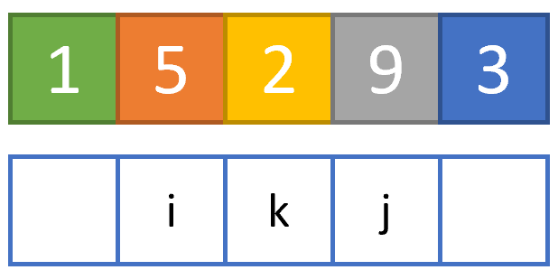
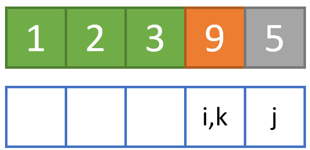

Selection sort¶
Introduzione¶
Il più semplice algoritmo di ordinamento è quello per selezione, comunemente conosciuto con il suo nome inglese, ovvero selection sort.
L'assunto da cui parte il selection sort è molto semplice, ed è riassumibile come segue. Immaginiamo di avere un vettore \(V\), e di volerlo ordinare in maniera crescente, ovvero posizionando all'estrema sinistra l'elemento più piccolo, ed all'estrema destra quello più grande. In altre parole, se:
il vettore ordinato \(V_{ord}\) sarà:
L'idea su cui si basa il selection sort è quella di "attraversare" il vettore \(V\), esplorando un elemento dopo l'altro a partire da quello all'estrema sinistra, individuando, ad ogni iterazione, l'elemento minimo tra quelli a destra dell'elemento considerato.
Così, ad esempio, alla prima iterazione l'elemento considerato sarà quello all'estrema sinistra (ovvero, \(V[1]=1\)); di quelli alla sua destra (ovvero, \(V_{dx}=[5,2,9,3]\)) sarà valutato il minimo e, se inferiore ad \(1\), i due valori saranno scambiati. Una volta terminata questa iterazione, si passa alla successiva, considerando l'elemento immediatamente a destra di quello considerato precedentemente (in questo caso, \(5\)), e ripetendo la procedura sui restanti valori (che diventano \(V_{dx}=[2,9,3]\)), fino a che il vettore non è stato completamente ordinato.
Funzionamento dell'algoritmo¶
Vediamo un esempio pratico. Per implementarlo, ci conviene usare tre variabili, ovvero:
i, contatore relativo all'elemento attualmente analizzato, che dovrà iterare su tutti gli elementi del vettore. Chiameremo questo ciclo esterno;k, variabile di appoggio, che all'inizio di ogni iterazione "esterna" sarà pari adi, e sarà aggiornata sulla base di alcune condizioni che vedremo in seguito;j, contatore relativo ai valori restanti del vettore all'i-ma iterazione, rappresentativo del ciclo interno e che, all'inizio di ogni iterazione esterna, sarà pari ai+1.
Immaginiamo di dover ordinare il nostro vettore V=[1,5,2,9,3]. Allora, alla prima iterazione:
isarà pari ad1, e punterà aV[1] = 1;ksarà pari adi, ovvero1;jsarà pari adi+1, ovvero2, e punterà aV[2] = 5.
Graficamente, saremo in questa situazione.
Nella figura precedente (ed in quelle successive):
- gli elementi in blu sono quelli non ancora esaminati dall'algoritmo;
- quelli in arancione sono relativi all'elemento attualmente indicizzato da
i; - quelli in giallo sono relativi all'elemento attualmente indicizzato da
k; - quelli in grigio sono relativi all'elemento attualmente indicizzato da
j; - quelli in verde sono quelli già esaminati ed ordinati.
Data questa situazione, compariamo i valori V[k] e V[j]: in particolare, se V[j] è inferiore a V[k], andiamo ad aggiornare il valore di k, ponendolo uguale a j, ed incrementiamo di 1 quest'ultimo valore; in caso contrario, limitiamoci ad incrementare j di 1. In questo caso, V[k] è pari ad 1, che è inferiore a V[j]=5, quindi limitiamoci ad incrementare j di 1, ottenendo la seguente situazione.
Anche in questo caso V[k] è minore di V[j], per cui dobbiamo limitarci ad aumentare il valore di j di una unità.
Proseguiamo:

Si nota subito che non è possibile aumentare ulteriormente il valore di j senza puntare ad un elemento non esistente. Di conseguenza, dato che k=i, siamo certi che non vi è alcun elemento di \(V_{dx}\) inferiore a \(V[i]\); possiamo quindi passare allo step successivo, che prevede l'incremento del valore di i, e la riassegnazione di k e j.
Notiamo che, stavolta, V[k]=5, mentre V[j]=2. Ciò implica che la condizione che sappiamo deve essere verificata (ovvero V[k] < V[j]) non è più valida. Di conseguenza, procediamo ad aggiornare il valore di k, ponendolo pari a j, ed aggiorniamo il valore di quest'ultima, incrementandolo di 1.

Proseguiamo nella nostra analisi, notando che V[j] > V[k], per cui non è necessario aggiornare il valore di k.
Giunti in questa situazione, notiamo che k è diverso da i, per cui dovremo sostituire V[k] con V[i], e riaggiornare i valori.
Continuiamo a seguire la stessa logica per i restanti passaggi.

Aggiorniamo il valore di k, perché V[k] > V[j].
Scambiamo i valori di V[k] e V[i].

Aggiorniamo il valore di k, perché V[k] > V[j].

L'algoritmo termina perché j=i+1=6 punta ad un indice non esistente nel vettore.
Come è possibile vedere, il selection sort permette di ordinare in maniera semplice un vettore di lunghezza arbitraria, semplicemente individuando in maniera iterativa il minimo del vettore a destra dell'elemento attualmente considerato.
Ordinamento decrescente
Si può usare il selection sort anche per ordinare \(V\) in maniera decrescente; per farlo, basta valutare, ad ogni iterazione, se V[k] < V[j]. In altre parole, basta cercare il massimo del vettore a destra dell'elemento attualmente considerato.
Diagramma di flusso¶
Il diagramma di flusso associato al selection sort è riportato di seguito.
flowchart TB
A(Start) --> B[V]
B --> C[i = 1]
subgraph "Ciclo esterno"
C --> D{i > lunghezza V?}
D -- Falso --> E[k = i]
E --> F[j = i + 1]
subgraph "Ciclo interno"
F --> G{j > lunghezza V?}
G -- Falso --> H{Vk > Vj?}
H -- Vero --> I[k = j]
H -- Falso --> L[j = j + 1]
I --> L
L --> G
end
G -- Vero --> M[i = i + 1
tmp = Vk
Vi = Vk
Vk = tmp
]
M --> D
end
D -- Vero --> N(End)Implementazione¶
In ultimo, riportiamo il codice per implementare il selection sort in MATLAB ed in Python.
function V = selectionSort(V)
%SELECTIONSORT Ordina il vettore in ingresso V.
% Ciclo esterno...
for i = 1:length(V)
k = i;
% Ciclo interno...
for j = i+1:length(V)
if V(j) < V(k)
% Aggiornamento elemento minimo
k = j;
end
end
% Ordinamento
tmp = V(k);
V(i) = V(k);
V(k) = tmp;
end
def selection_sort(V):
""" Funzione per l'ordiamento mediante selection sort.
"""
for i in range(len(V)):
k = i
for j in range(i+1, len(V)):
if V(j) < V(k):
k = j
tmp = V[k]
V[i] = V[k]
V[k] = tmp